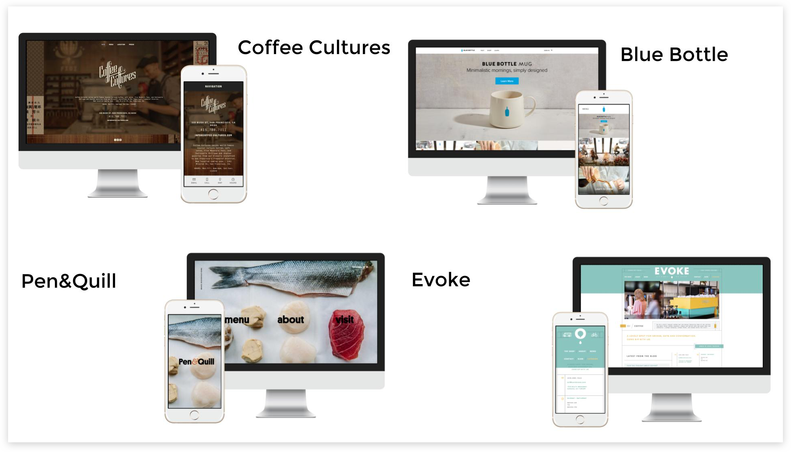
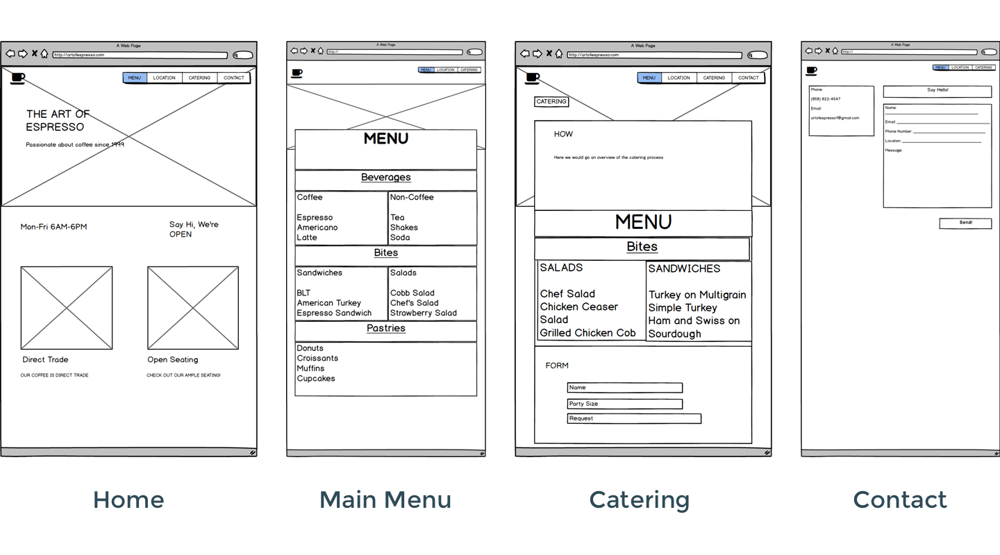
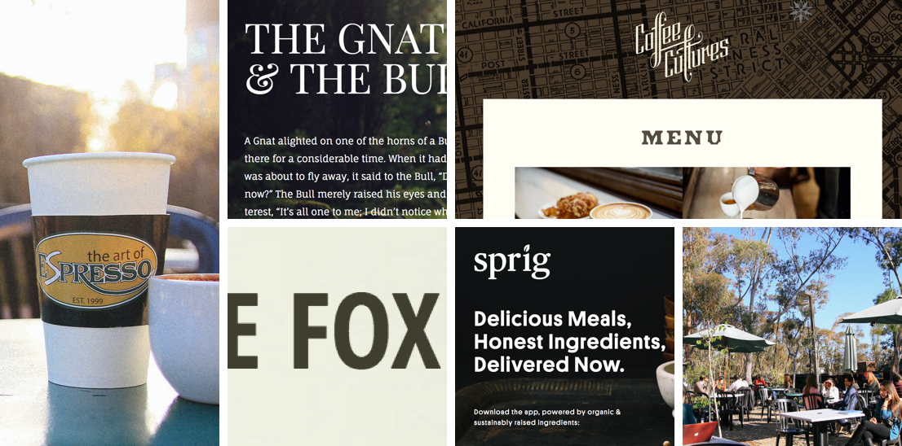
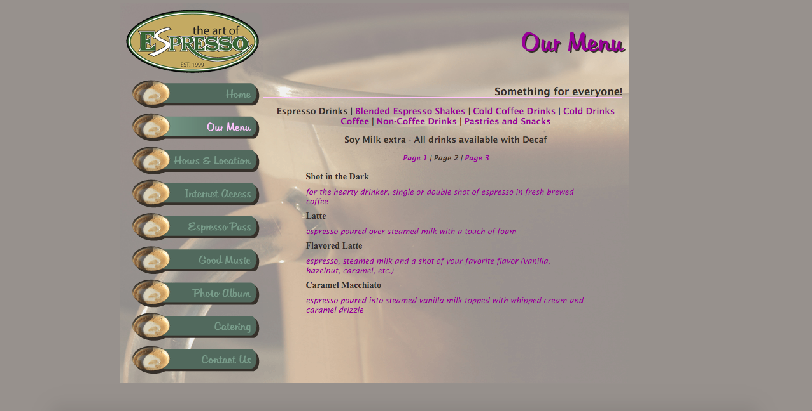

Role: UX Designer
Time: 2 months
Tools: Balsamiq, Sketch, Invision
Deliverables: Creative Brief, Competitive Analysis, Website
The Art of Espresso is a humble coffee cart located on a small hill near the center of UC San Diego. Known for it’s welcoming atmosphere and direct trade coffee, it has become a staple for students and faculty alike.
I worked in a team of 3 to redesign the business’ website. We guided our client through a comprehensive research and design process.
We needed to learn about the needs of the business and the customers. We started by gathering requirements from our client - they needed a menu for regular items and for catering, no $$$ on the menus to account for fluctuating prices, and we constrained to designing for the existing brand.
We then interviewed a total of 12 coffee drinkers consisting of students and faculty. These are the insights we gained from our conservations with them –
A place to meet
Many people had trouble finding the cart at first. Copy and imagery needed to effectively communicate the location of the cart.
Customer on the go
A large majority of people we interviewed drank their coffee on the go. If they were to visit the site, it needed to be responsive.
Attracting newcomers
Some people had never even been to the Art of Espresso. Showing them the old website did not provide a good first impression.
A thorough competitive analysis helped us generate ideas on how to solve some issues we were facing. Namely, how might we design a website that hosts a large amount of information like food and drink menus?

We then created desktop wireframes using Balsamiq. We decided to implement a card-based UI pattern because it improves scannability of the site by organizing information into chunks of content. Furthermore, cards are visually appealing and are easily adaptable to multiple screen sizes.

The site needed to evoke a modern aesthetic without sacrificing the “mom and pop” appeal that the cart was known for. We took visual inspiration from the earthy tones surroundignt the cart. I worked on developing a styleguide that complemented the imagery my partner took.

I made an initial prototype of the mobile version of the site using Sketch and Invision. Mobile design has the most limitations, primarily screen-size and bandwidth, which was a useful design constraint because it helped us hone in on what matters most, content.
Design decisions
1. Using hamburger menu design pattern rather than the word "Menu" to avoid confusion with food and drink menu
2. The banner message updates depending on the time of day. At any given moment, users can check the site to see if the Art of Espresso is open.
3. Direct link to page with more info for users seeking to learn more operational information
4. A collapsible menu helps sort out the 50+ items on the food and drink menu. This helps prevent cognitive overload for users.
5. Click to expand and collapse
Our final deliverable is a responsive website that stays true to the Art of Espresso’s brand, while adressing client and user needs.
I learned a lot from this project, most notably – how to communicate with a client, designing for mobile, and how to work with developers effectively. Shout out to Kami and Vincent for being amazing teammates!
Check out the before and after below.
Redesigned menu
Old menu